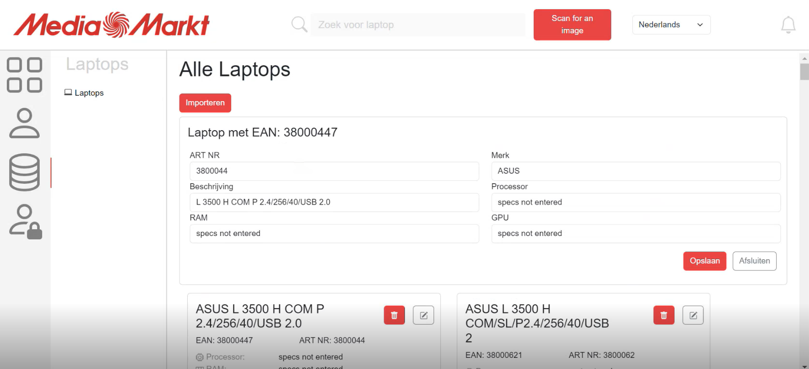

MediaMarkt: Communication Bazaar
Vue.js | JPA | Springboot
MediaMarkt offers solutions for customers with technical issues. One of these is "Startklaar" (Ready to Start). This is one of the services that MediaMarkt provides to customers. When you purchase a laptop with "Startklaar," it means that your laptop comes equipped with the latest updates and software such as McAfee antivirus, Microsoft Office, the latest Windows updates, and more. For customers, this saves a lot of time, allowing them to use the laptop immediately without waiting for downloads or installations. When a laptop is made ready for use, the stores create a copy of the ready-to-use laptop, including drivers, programs, etc. This copy of the laptop is referred to as an 'image'.
We were assigned to create a web application that keeps track of all the images created by each MediaMarkt location. Having an overview of all the images, as well as the corresponding laptops.
The product
We developed a web application featuring an overview of images that can be filtered based on their status. There are separate overviews for all the laptops for which images can be created. There is an admin page that has access to all the users who work on these images. All three of these pages are equipped with CRUD functions. Users who are logged in can claim images to work on and, after some time, mark these as finished. The admin can create new requests for images and put them in the overview, so users can work on them.
My task within this project was to create the overview of the images, as well as the overview of the laptops. I implemented CRUD functions for the laptop page, and only Read and Delete functions for the image page.
What I learned:
-
I got familiar with using Vue.js. We were learning about Vue.js within another course, and I was really excited to combine what I learning within the project with my other course.
-
I was able to enhance my leadership skills. I was very proactive in the process and ensured that everything was in order for each sprint review. I played a key role in achieving our project milestones.